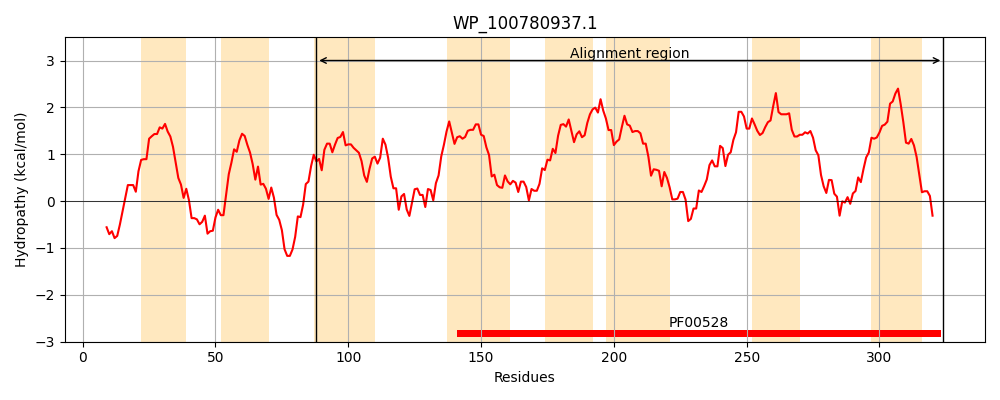
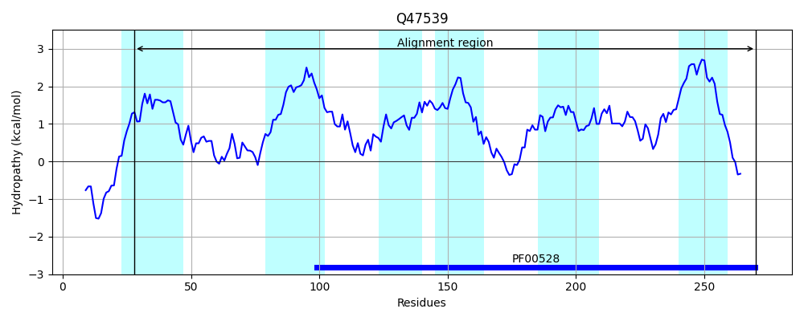
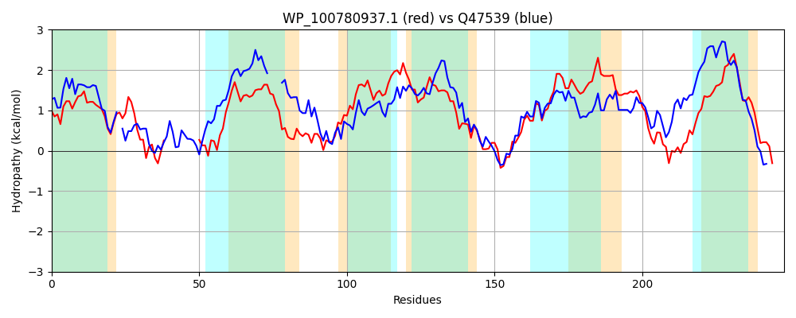

Hit Accession: Q47539
Hit TCID: 3.A.1.17.1
Hit Description: gnl|BL_ORD_ID|13719 gnl|TC-DB|Q47539|3.A.1.17.1 Taurine transport system permease protein tauC - Escherichia coli.
Mach Len: 248
e:0.000000
Query TMS Count : 8
Hit TMS Count: 6
TMS-Overlap Score: 5.500000
Predicted Substrates:CHEBI:9406;taurine
BLAST Alignment:
Score: 271 , Bit scores: 108 bits, E-value: 8.7e-28, Alignment length: 248, Percentage identity: 31
Query: 88 LALLPVLFAVWEGLTAKSAVLPVPFFAPPQALIEVLHDD-----------WPRLLDSLLHSLGLLGLGVLLGTSSGFITGLALGWSQRIGYWVHPVLRLLGPVPSTALLPLCLFIFPSSFGASVFLIALSTWFPVTVLTWSGVMGIDKAWYDVARTLGASQRFLILRVAIPAALPNVFVGLFMGLGASFSVLIVAEMVGVKSGIGFYLQWAQGWAAYPNMYAALLVMALLCSGLISGLFMLRDRLLSW 324
+ L VL VW + + P+ F PPQ ++E L W L SL + L VL G G+A+G S + + P++ L PVP A LPL + F + + LI L+ + PV + +GV + + A++LGAS+ ++ V +P ALP + GL +GLG +S L+ AE++ G+GF +Q A + A + A + V+A++ L GL L+ RL W
Sbjct: 28 IGTLAVLLTVWWTVATLQLISPL-FLPPPQQVLEKLLTIAGPQGFMDATLWQHLAASLTRIMLALFAAVLFGIP----VGIAMGLSPTVRGILDPIIELYRPVPPLAYLPLMVIWFGIGETSKILLIYLAIFAPVAMSALAGVKSVQQVRIRAAQSLGASRAQVLWFVILPGALPEILTGLRIGLGVGWSTLVAAELIAATRGLGFMVQSAGEFLATDVVLAGIAVIAIIAFLLELGLRALQRRLTPW 270 | Protein Hydropathy Plots: |
|---|
|  |  |
Pairwise Alignment-Hydropathy Plot:
|
|---|
|  |